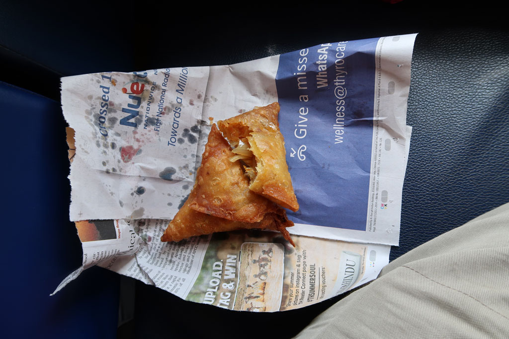
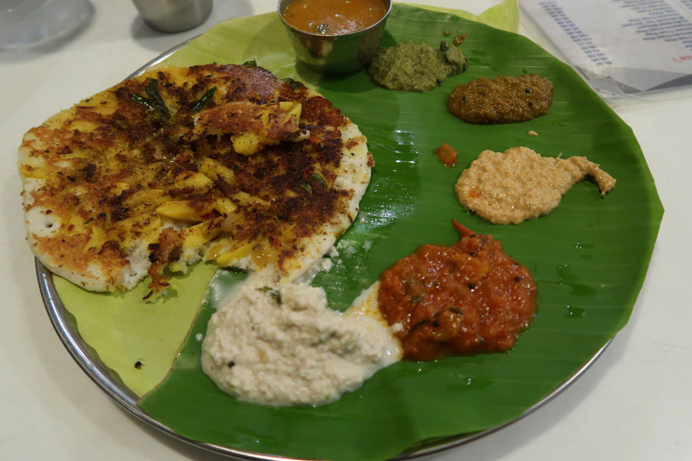

Tamil Nadu / Vers Kanyakumari
6h30 Réveil, on fini de boucler les sacs.
7h30 Ouverture du restaurant de l’hôtel, nous allons vie prendre notre petit déjeuner.
8h00 Checkout. On saute dans un tuk tuk pour la gare routière.
8h30 On n prend pas la bus indiqué, qui nous aurait fait faire un trop grand détour. 880R
8h40 Direction Nagercoil, avec un petit arrêt beignets et eau. Dès que les montagnes sont dépassées, paysage change du tout au tout. De désertique il devient verdoyant. Coincé entre les montagnes et le long de la mer les éoliennes poussent comme des champignons.
13h15 Arrivés à Nagercoil, un vieux monsieur nous indique le bus local pour Kanyakumari 5 min plus tard. 22R/p
15h00 Descendus du bus sur la rue principale, nous déclinons les propositions des tuk tuks pour partir à pieds à la recherche de notre hôtel. Le premier est en travaux, l’accueil peu aimable et propose des chambres pas terribles. Le deuxième est parfait, nous négocions néanmoins le prix, qui passe de 4400R à 2500R. Du coup nous prenons 2 nuits.


16h00 nous partons en balade, dans la partie touristique puis dans le village de pécheurs.
17h30 retour à l’hôtel pour une bonne douche.
19h00 A la recherche d’un ATM qui fonctionne.
19h10 repas au Triveni, grande cantine locale. Thali, palaak paneer, parotta, roti, dhal, rice, chapati x 2, lemon juice x4. vraiment excellent.
20h00 direction un petit papi, qui tient un stand de café/thé, pour thé et petit gâteau sur le trottoir. Nous savourons le moment sur nos petits tabourets bleus.
20h30 mission cigarettes avant de revenir à l’hôtel pour une bonne nuit de repos.